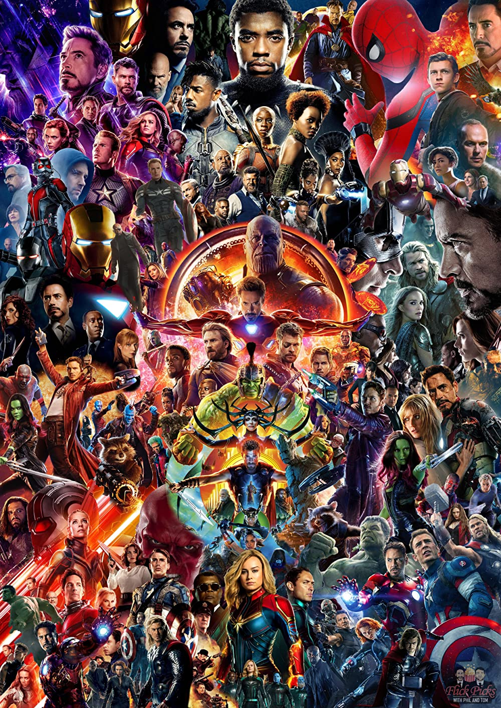
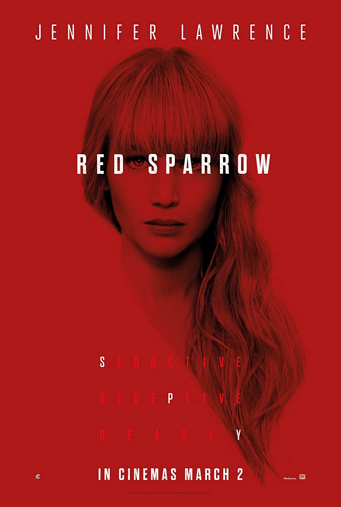
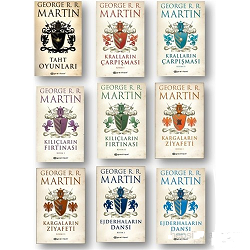
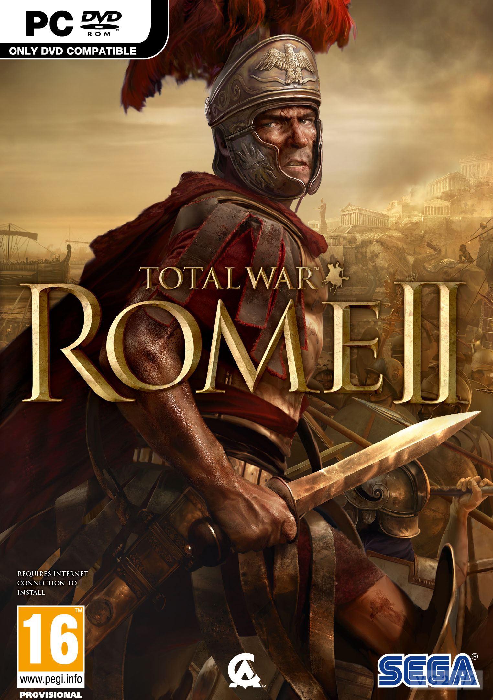
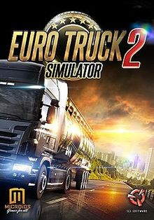

<!DOCTYPE html>
<html lang="tr">
<head>
    <meta charset="UTF-8">
    <meta http-equiv="X-UA-Compatible" content="IE=edge">
    <meta name="viewport" content="width=device-width, initial-scale=1.0">
    <title>Front-End Patikası, Html Ödev1</title>
</head>
<body>

</html>
<h1>Mücahit Emre KÜÇÜKYILMAZ</h1>
<!-- h1 ana başlık, h2 2. seviye başlık, h3 ise açıklamalardan oluşacak-->
<a href="#sonbolum">Aşağı Git</a>
<h2>Hakkımda</h2>
    <h3>Ben ilkokul eğitimimi Konya'da Şeker İlköğretim okulunda tamamladım. 6-7-8. sınıflarda girdiğimiz SBS sonucunda 2012 yılında yine Konya'da Atatürk Öğretmen Lisesini kazandım. 
İlk 3 senemde sayısal ağırlıklı ilerlesem de son sene üniversite eğitimim de zorlanmamak amacıyla eşit ağırlığa geçtim. YGS ve LYS sonucunda 2016 yılında Selçuk Üniversitesi Hukuk Fakültesini kazandım. 
Avukatlık stajımı tamamlamam ve zorunlu askerlik görevimi Jandarma Yedek Subay olarak tamamlamama müteakip yeni kariyer planlarım doğrultusunda yazılım eğitimi almaya başladım.
    </h3>

<h2>Sevdiğim Filmler</h2>
    <h3>
        <ul>
            <li><a href="https://tr.wikipedia.org/wiki/Yüzüklerin_Efendisi" target="_blank"></a>Yüzüklerin Efendisi</li>
            <li><a href="https://tr.wikipedia.org/wiki/Marvel_Sinematik_Evreni" target="_blank"></a>Marvel Sinematik Evreni(MCU)</li>
            <li><a href="https://www.imdb.com/title/tt4209788/" target="_blank"></a>Molly Games</li>
            <li><a href="https://www.imdb.com/title/tt2873282/" target="_blank"></a>Red Sparrow</li>
        </ul>
    </h3>
<div>
    <h2>Sevdiğim Kitaplar ve Yazarlar</h2> 
        <h3>
             <lu>
                <li><a href="https://tr.wikipedia.org/wiki/Buz_ve_Ateşin_Şarkısı" target="_blank"></a>Buz ve Ateşin Şarkısı:Son yıllarda televizyona Game Of Thrones ismiyle gelse de her yapımda olduğu gibi kitabın tamamı ekrana yansılatılamamıştır.</li>
                <li><a href="https://www.google.com/search?client=opera&q=selçuk+şirin+kitapları&sourceid=opera&ie=UTF-8&oe=UTF-8" target="_blank"></a>Selçuk Şirin'in kitapları</li>
                <li><a href="https://www.google.com/search?q=henry+kissenger+kitap&source=lmns&bih=970& biw=1920&client=opera&hs=O3L&hl=tr&sa=X&ved=2ahUKEwi2xpbsxdf-AhVZO-wKHe2bBUkQ_AUoAHoECAEQAA" target="_blank"></a>Henry KİSSENGER'ın kitapları</li>
            </lu>
     </h3>
</div>


<h2>Sevdiğim Oyunlar</h2>
    <h3>
         <lu>
            <a href="https://www.callofduty.com/modernwarfare" target="_blank"></a>
            <a href="https://store.steampowered.com/app/214950/Total_War_ROME_II__Emperor_Edition/" target="_blank"></a>
            <a href="https://store.steampowered.com/app/227300/Euro_Truck_Simulator_2/" target="_blank"></a>
        </lu>
    </h3>

<!--h3 paragraflarında bulunan film, kitap vs. sonrasına link ekle-->
<a name="sonbolum"></a>
</body>